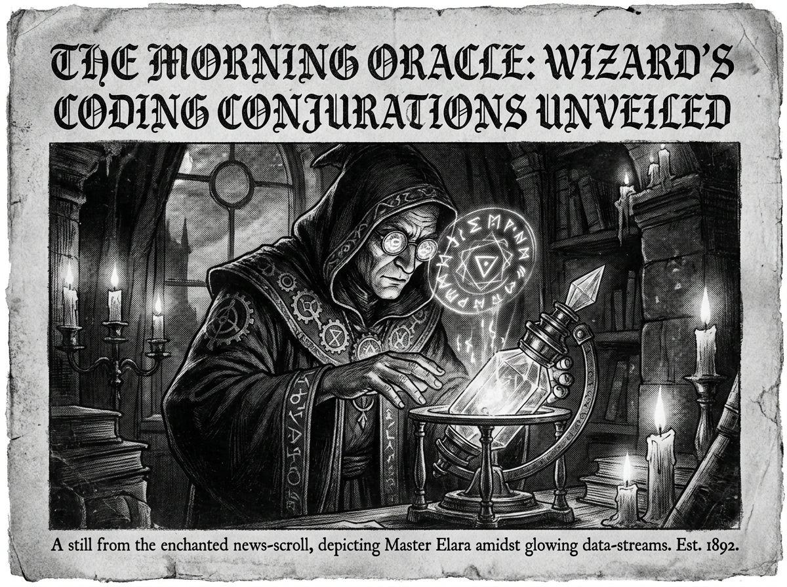

Morning Edition
6:00 AM CDTFinance & Markets
Markets Carry April Momentum into May
U.S. equity futures pointed higher after Wall Street’s strongest month in years, with Apple’s earnings reaction helping keep the risk-on tape alive into the weekend.
— Sources: CNBC / MSN, May 1, 2026Ares Hauls in a Record $30 Billion
Ares Management’s first-quarter fundraising haul eased some private-credit “doomsday” fears and signaled that large allocators are still feeding the private markets machine.
— Sources: Reuters / The Wall Street Journal, May 1, 2026Private Equity Starts May in Execution Mode
Deal advisers are framing 2026 private equity around execution rather than easy multiple expansion, while May recaps point to a market still hunting for realizations, new platforms, and cleaner exits.
— Sources: Ropes & Gray / Forvis Mazars, May 1, 2026World & US
Iran Strait Proposal Becomes a Diplomatic Flashpoint
NBC reported that an Iranian proposal rejected by President Trump would have opened the strait before nuclear talks, keeping energy security and war diplomacy at the center of the day’s world file.
— Source: NBC News, May 2, 2026May Day Demonstrations Meet Energy-Cost Anxiety
Workers’ rallies unfolded against a backdrop of rising energy costs tied to the Iran war, giving the traditional May Day story a sharper economic edge.
— Source: AP News, May 2, 2026European Allies Brace for Arms and Troop Questions
Reports said the U.S. warned allies including the UK and Poland about arms-shipment delays, while NATO sought details on potential U.S. troop reductions in Germany.
— Sources: Financial Times via U.S. News & World Report / The Guardian, May 2, 2026
The Saturday Scrying Lens: a gothic code-mage watches tomorrow’s architecture flicker through the ink.
"Begin with the small spell that unlocks the large door; every clean commit is a little sunrise."— The Developer’s Almanac
Sagittarius Horoscope
Justin, today’s Sagittarius signal is practical magic: confidence comes from closing the pending loop, not opening three new portals. The Rat-year strategist in you can see the hidden path before everyone else, but Mercury’s earthy mood says to make it concrete—name the next build, protect your focus, and let one well-chosen task become proof. Lucky hex: #C0FFEE. Lucky port: 3000. ✨
— Adapted from Sagittarius horoscopes by Vogue India, Hindustan Times, The Economic Times, and YourTango, May 2, 2026Tech, AI, Space & Crypto
-
Pentagon Signs AI Deals, Anthropic Left Out
The Pentagon reached agreements with leading AI companies, according to Reuters, but Anthropic was not part of the reported group—another sign defense AI procurement is becoming a major platform battleground.
— Source: Reuters, May 1, 2026 -
Defense Tech Leads the Funding Board
Crunchbase’s weekly funding roundup put defense tech on top, led by a $600 million round for space-security startup True Anomaly; crypto.news also noted 137 Ventures reloading with $700 million to chase AI agents and space.
— Sources: Crunchbase News / crypto.news, May 1, 2026 -
Space Coast Keeps the Launch Clock Ticking
SpaceX marked May Day with a Starlink Falcon 9 launch from Cape Canaveral, while NASA and partners updated the 2026 International Space Station flight plan.
— Sources: Spaceflight Now / NASA, May 1, 2026 -
Bitcoin Bounces on Big-Tech Optimism
CoinDesk reported Bitcoin firming as big-tech earnings improved market mood, though short-term crypto pressures remained in the mix.
— Source: CoinDesk, May 1, 2026 -
AI Narrative Broadens Beyond the Usual Giants
Market commentary is stretching past ChatGPT-and-Nvidia shorthand toward repricing the surrounding stack: agents, chips, defense, infrastructure, and the companies that quietly glue it together.
— Sources: TechStock² / Reuters / Crunchbase News, May 2, 2026
Active Reminders
- Test reminder from Nemu (Jan 29)
- Connect Nemu to Notion (Feb 1)
- Research VPN/proxy services for secure agent browsing (Feb 1)
- Create security OpenClaw bot (Feb 2)
- Plaid Integration Research (Feb 4)
- Build Oomi iOS and Android app to connect Nemu to data (Feb 15)